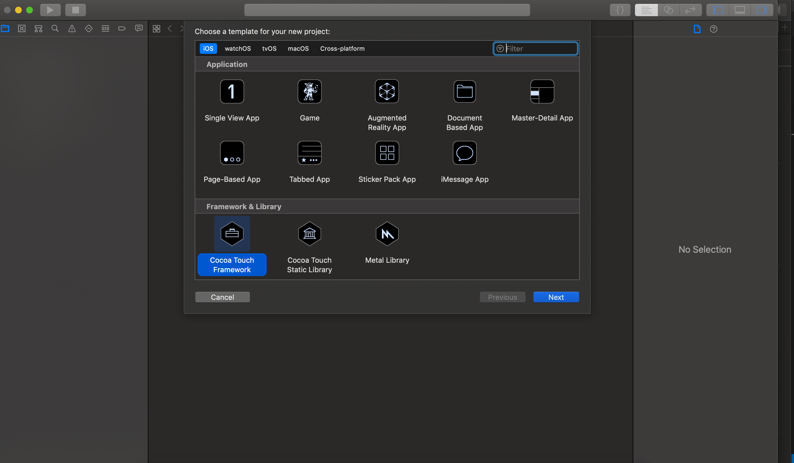
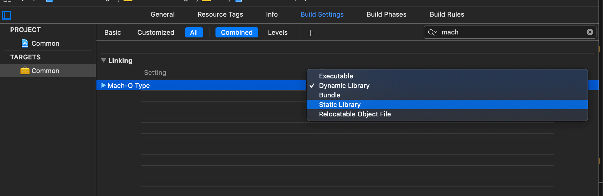
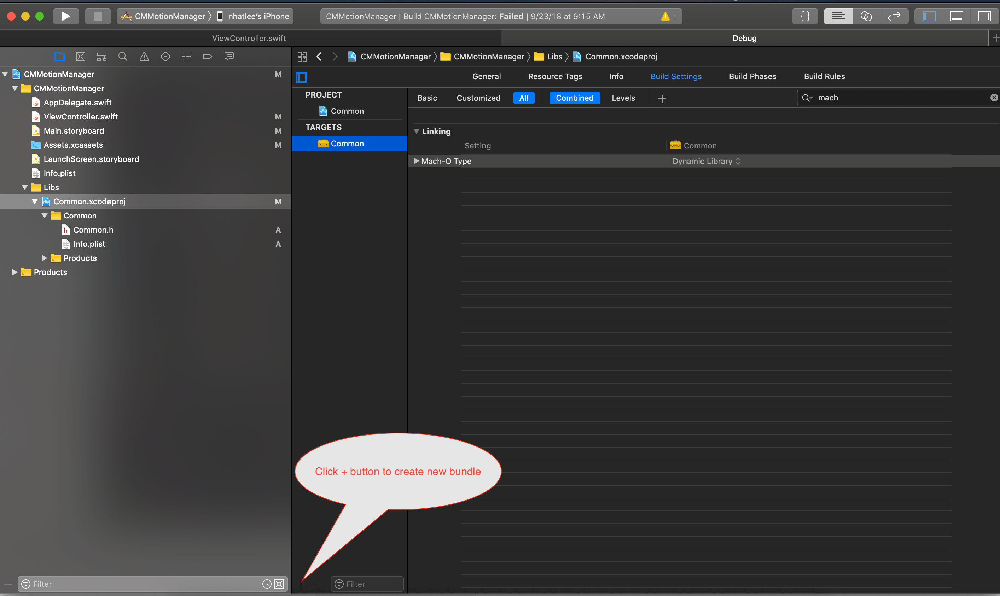
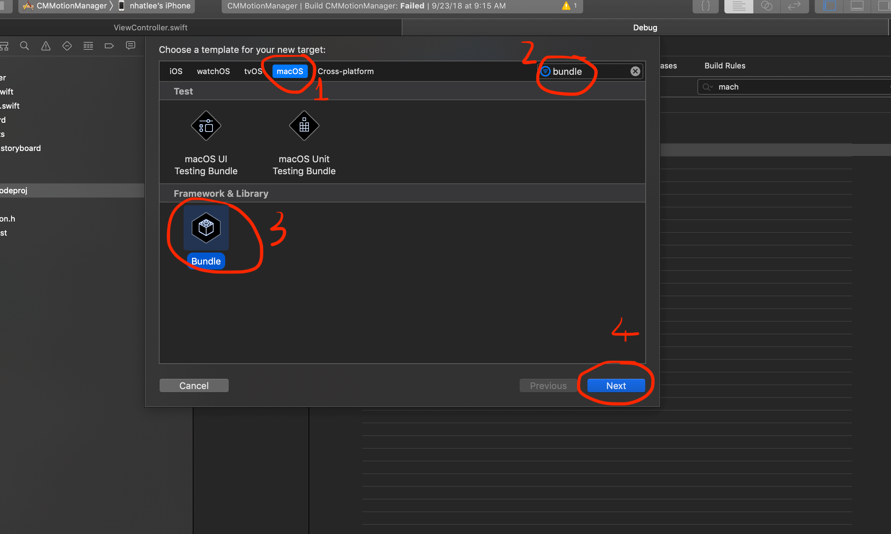
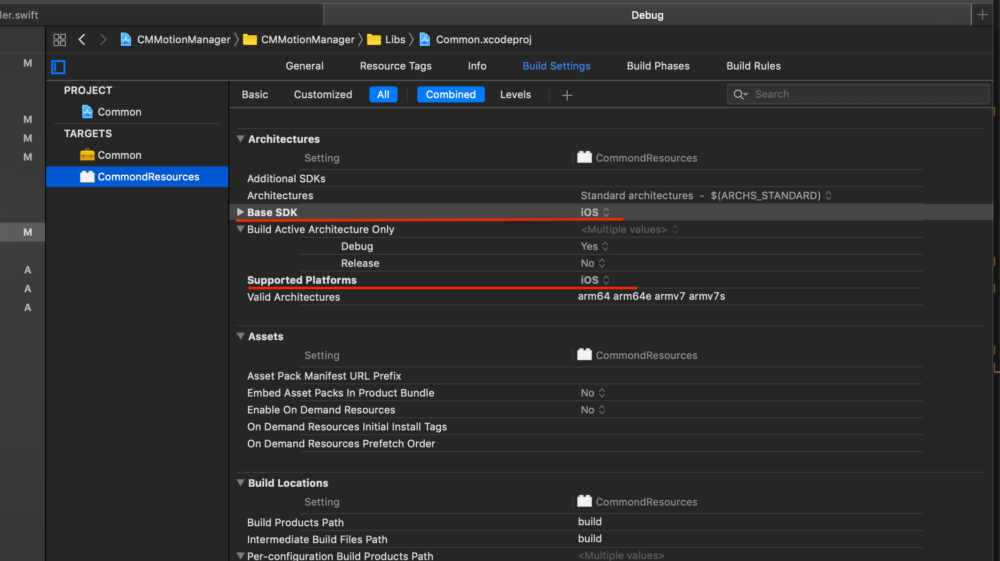
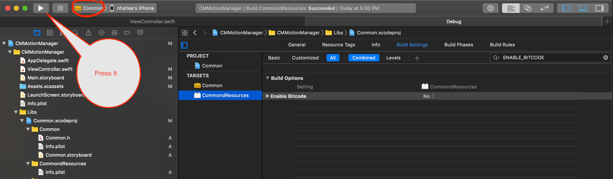
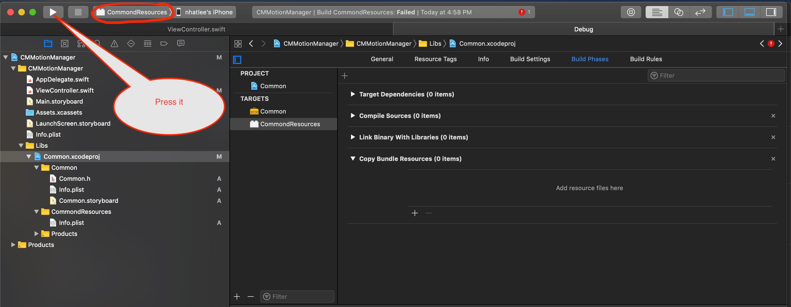
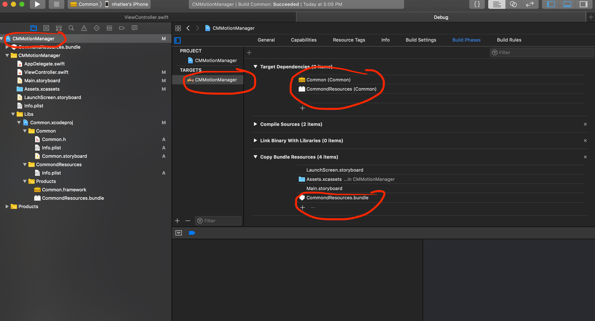

The main steps for build a static library
Have many articles write about this. So I just noted some steps which
important to build successful a static framework
For how to create new frame work, from your project select new project then choose Cocoa Touch Framework
A picture is worth a thousand words :)

Give a name for your framework(I set Common for my framework's name). Then into Build Setting of your framework to change your frame work from
dynamic to Static Library :

It seem very simple to have a static library, another steps to use your framework above you can search many place on the internet.
But how about if you have some .xib or .storyboard files in your
libary? The app will crash when you use this libary. How to fix it?
Ok! You will need to create a bundle to put all xib and storyboard files in
it. How to create bundle? Just see the image :)
First:

Then:

After that press next button you will need to put the name for your bundle. Then you change the Base SDK and Supported Platforms into bundle setting to iOS

Then stay at your bundle, select Build Phrases -> Coppy Bundle Resources press the + button to add your resources(assert image, .xib files, storyboard files) to the bundle.
After that just make sure you uncheck the box Inherit Module From Target. If you starting build your lib from the beginning like this example then the box will uncheck by default. But if you used your existing resources to build the static lib just be careful with this. It'll will make your app crash without any clear reason in the debug console of Xcode.
You also need disable ENABLE_BITCODE into your bundle setting.
Then remember to build your lib and bundle to make it available for use:
Build your library:

Build your bundle:

The final step is add your bundle and lib to your main project. Just make sure your lib and bundle have into Target Dependencies and Copy Bundle Resources. The final resource will look like that:

Another note maybe your known it before :) The code for get bundle into your lib is:
lazy var assetBundle: Bundle? = {
guard let path = bundle.path(forResource: "CommondResources", ofType: "bundle") else { return nil }
return Bundle(path: path)
}()
And then....You Done!Hapy coding :)